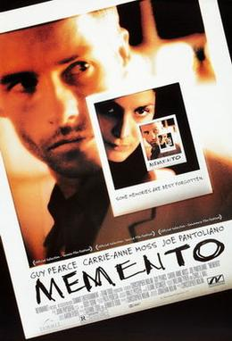

Memento

Release Date: 11 October 2000
Director: Christopher Nolan
Main Cast: Guy Pearce, Carrie-Anne Moss, Joe Pantoliano
IMDb Rating: 8.4/10 ⭐
Age Rating: R (18+)
A man with short-term memory loss uses notes and tattoos to hunt for the man he thinks killed his wife. It's a unique and brilliantly crafted psychological thriller.
My Advice: Watch it for the unique storytelling structure. The movie plays in reverse order, putting you in the same confusing position as the main character. It demands your full attention!
• The film's unique structure (playing in reverse chronological order for the color scenes) was designed to make the audience feel the same confusion as the protagonist.
• The movie is based on a short story called "Memento Mori" written by Christopher Nolan's brother, Jonathan Nolan.
• Guy Pearce wore prosthetic tattoos on his body for the role, which took hours to apply each day.
• The black and white scenes in the movie are actually shown in chronological order, while the color scenes are shown in reverse order.